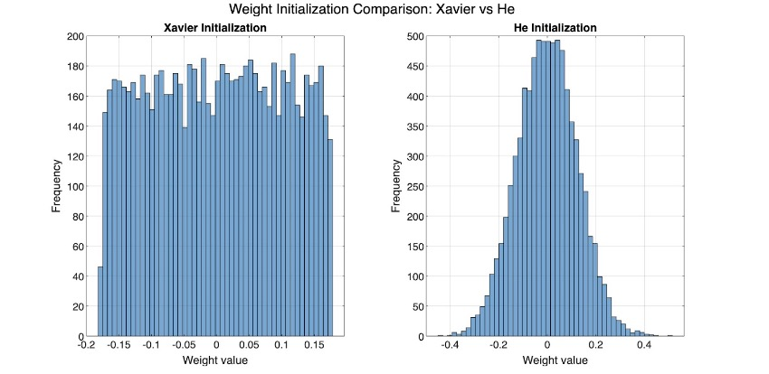
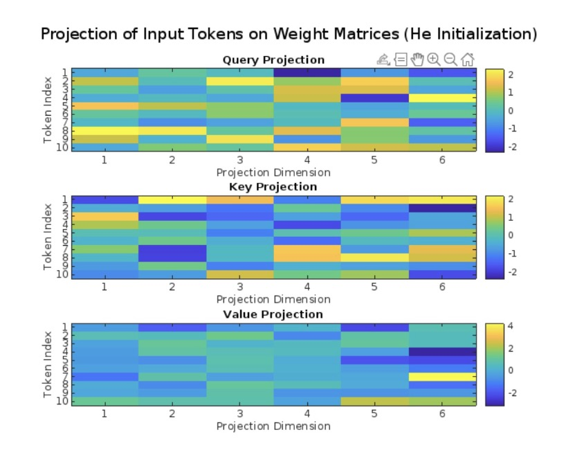
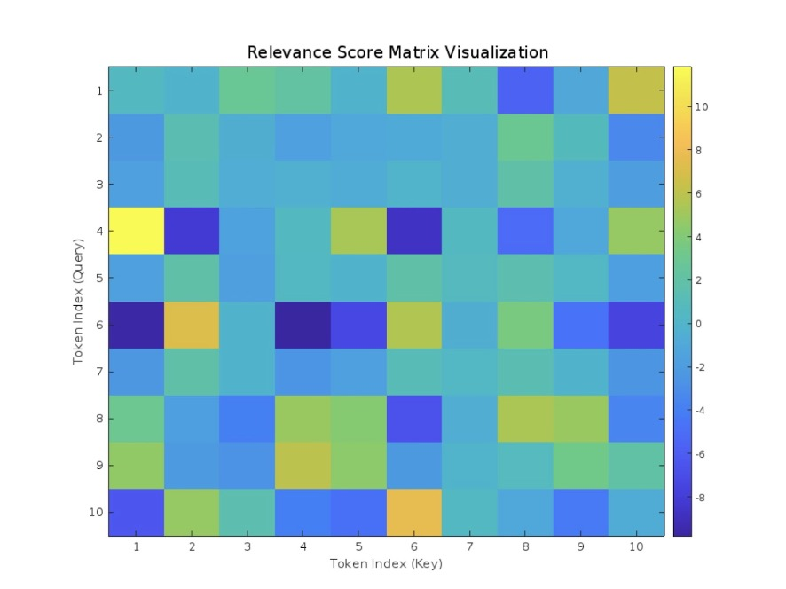
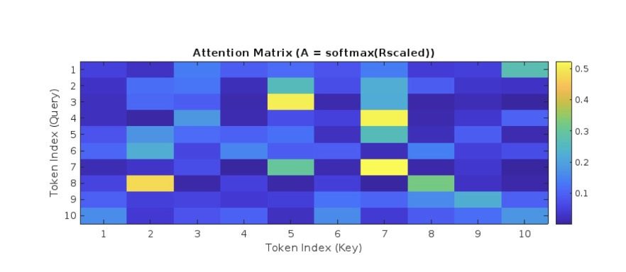
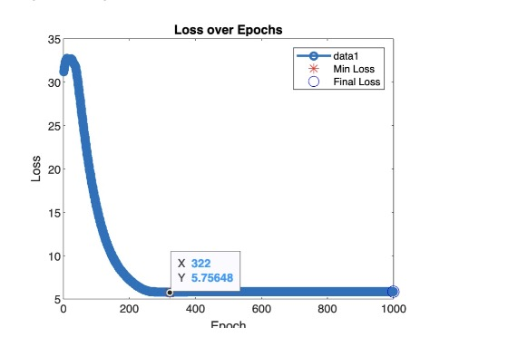
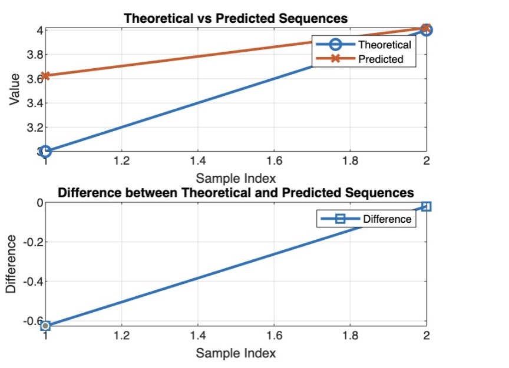

This is the third part of a series of primers I’ve written. Please read the first two as I’ll continue with the foundation we’ve built up. Note that we first established supervised learning with a log-likelihood bayesian loss function, L1 and L2 regularization to add weight decay, gradient descent to optimize our loss function and update weights/biases, and the use of a sigmoid activation to induce nonlinearity. We applied these methods for binary classification of a synthetic dataset. In the second primer, we discussed Recurrent Neural Nets (RNNs), the Backpropagation Through Time (BPTT) algorithm, gradient clipping, the Gated Recurrent Unit (GRU), and the Long Short-Term Memory (LSTM) unit. We aim to explore the wildly popular transformer architecture next.
Recall that RNNs suffer from vanishing and exploding gradients. While we showed that GRUs and LSTMs can alleviate this problem, we still need a more robust solution. Additionally, the sequential nature of RNNs limit parallelization, as each step depends on the previous one. This makes RNNs slow to train, especially in scenarios when parallelization is not possible. Additionally, LSTMs and GRUs still struggle with very-long range dependencies. We solve these issues through the transformer architecture.
Let’s begin with the initialization of the query matrix \(W_Q\), the key matrix \(W_K\), and the value matrix \(W_V\). These matrices will learn using a gradient-based optimization method to minimize the loss function. There are two common initialization methods:
- We often use Xavier/Glorot Initialization when we have a symmetric activation function like \(\tanh\). Let \(d_{in}\) and \(d_{out}\) be the input and output dimensionality of the layer:
- For layers with \(\text{ReLU}\) activations, we maintain gradient variance using He Initialization:
\[ W \sim U\left(-\frac{\sqrt{6}}{\sqrt{d_{in} + d_{out}}}, \frac{\sqrt{6}}{\sqrt{d_{in} + d_{out}}}\right) \]
\[ W \sim U\left(-\sqrt{\frac{2}{d_{in}}}, \sqrt{\frac{2}{d_{in}}}\right) \]
These distributions aren’t necessarily intuitive, so I’ll use MATLAB to create a histogram of the weight distribution for each initialization.

After initializing our weights, we project an input sequence \(X \in \mathbb{R}^{n \times d}\). We can then provide 3 projections of the input sequence: the Query (Q), the Key (K), and the Value (V). These three resulting vectors are at the heart of self-attention.
- The Query vector represents the token that is seeking relevant information from other tokens in the sequence:
- The Key vector represents the metadata of each token in the sequence to match against the Query to determine relevance:
- The Value vector represents the information carried by each token in the sequence:
\[ Q = XW_Q \]
\[ K = XW_K \]
\[ V = XW_V \]
Let’s generate some random input tokens and use He initialization to show the projection of the input tokens onto the three weight matrices.

Here, each row represents a token index and each column represents a projection dimension. The distribution of colors indicates the variation in projection values, with higher values in yellow and lower values in blue.
We want to compute some sort of relevance score between the Query vector of one token and the Key vectors of all tokens. Recall that the dot product has the unique property of measuring similarity. When we take the dot product between the Query vector and each Key vector, we obtain a comprehensive matrix that contains all the similarity scores between every pair of tokens in the input sequence. This can be represented as:
\[ R = QK^T \]
Let’s visualize this in a similar way of how we did the projections, except this time we have the more meaningful Query-Key relationship.

We refer to this as the Relevance Matrix \(R\). Since the dimensionality of the Queries (Q) and Keys (K) is the same, denoted by \(d_k\), we can divide our Relevance Matrix by \(\sqrt{d_k}\) as a form of normalization to stabilize gradients. Let’s call this \(R_{scaled}\):
\[ R_{scaled} = \frac{R}{\sqrt{d_k}} \]
Okay, so we have our normalized Relevance Matrix. We can perform a \(\text{softmax}\) activation to convert this matrix into a probability distribution matrix. We call this an Attention Matrix \(A\):
\[ A = \text{softmax}(R_{scaled}) \]
In an attention matrix, each row represents the attention distribution for the query among all keys in the sequence. Let’s see this distribution.

Note that the “hot spots” emphasize points of high attention. In practice, these attention matrices can have millions and even billions of elements in them. We project our attention matrix onto the value matrix to determine the output matrix \(Z\):
\[ Z = AV \]
Here, each row is a weighted sum of the Value vectors. We can pass these context-aware embeddings into a feedforward network.
\[ H = \text{FeedForward}(Z) \]
We can then backpropagate through our network all the way to the QKV matrices.
\[ W = W - \eta \frac{\delta L}{\delta W} \]
Let’s implement this transformer network using a simple gradient descent network to detect a simple saw pattern.

Let’s check out where our loss is occurring:
It might be helpful to add positional encoding here. Here, we use sine-wave frequency encoding.

For MATLAB code, please reach out: